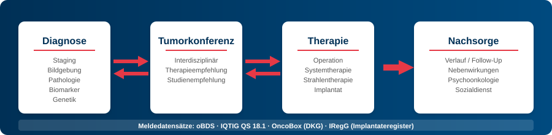

Kerndatensatz Senologie - Local Development build (v0.9.0) built by the FHIR (HL7® FHIR® Standard) Build Tools. See the Directory of published versions
Home
| Official URL: https://www.senologie.org/fhir/ImplementationGuide/kds-senologie | Version: 0.9.0 | |||
| Draft as of 2026-05-12 | Computable Name: SenologieKDS | |||
Kerndatensatz Senologie
Der Kerndatensatz Senologie definiert FHIR-Profile für die strukturierte Dokumentation der Brustkrebsversorgung an zertifizierten Brustzentren und darüber hinaus. Er umfasst den gesamten Versorgungspfad von der Erstvorstellung über Diagnostik, Therapie und Nachsorge bis zur Verlaufsdokumentation.

Für wen ist dieser IG?
| Zielgruppe | Was finde ich hier? | Einstieg |
|---|---|---|
| Kliniker:innen | Welche Daten werden erfasst, welche Terminologien werden verwendet | Datenmodell, Testpatientinnen |
| IT / Entwickler:innen | FHIR-Profile, Questionnaires, Extraktion, technische Schnittstellen | Profile, Artifacts |
| Qualitätssicherung | Ableitung von Meldedatensätzen (oBDS, IQTIG, OncoBox, IRegG) | Anwendungsfälle |
| Forschende | Sekundärnutzung, Terminologien, Interoperabilität | Terminologie, Datenmodell |
Versorgungspfad
Der Datensatz bildet den klinischen Workflow der Senologie in folgenden Bereichen ab:
| Bereich | Beschreibung | Profile |
|---|---|---|
| Diagnose | Erstdiagnose, Rezidiv, Staging (cTNM), Seitenlokalisation | Diagnose |
| Diagnostik | Bildgebung (Mammografie, Sono, MRT), Pathologie, Biomarker | Bildgebung, Pathologie |
| Therapie | Operation, Systemtherapie, Strahlentherapie | Operation, Systemtherapie |
| Tumorkonferenz | Therapieempfehlungen, Fachdisziplinen | Tumorboard |
| Nachsorge | Verlauf, Vitalstatus, Rezidivmonitoring | Follow-Up |
Das detaillierte FHIR-Ressourcenmodell finden Sie unter Datenmodell.
Zielsetzung
- Standardisierte Erfassung klinischer Daten entlang des Versorgungspfads Mammakarzinom
- Interoperabler Datenaustausch zwischen klinischen Systemen, Krebsregistern und Forschungsdatenbanken auf Basis von HL7 FHIR
- Sekundärnutzung der Versorgungsdaten für Qualitätssicherung, Versorgungsforschung und klinische Studien
Einordnung
Der Kerndatensatz nutzt bestehende MII-Kerndatensatzprofile als technische Basis, ist aber ein eigenständiger Datensatz – kein MII-Modul. Die technische Umsetzung erfolgt durch das Berlin Institute of Health at Charité (BIH), die inhaltliche Abstimmung mit der Deutschen Gesellschaft für Senologie (DGS), der Deutschen Gesellschaft für Gynäkologie und Geburtshilfe (DGGG) und der Arbeitsgemeinschaft Gynäkologische Onkologie (AGO).
Designprinzip: Formular-First
Die Datenerfassung erfolgt über SDC-Questionnaires, die sich am klinischen Workflow orientieren. Im Hintergrund werden die Formulardaten über Template-based Extraction in FHIR-Ressourcen überführt. Siehe Erfassung.
Abhängigkeiten
| Technisch (FHIR-Pakete) | |
|---|---|
| MII Onkologie | Diagnose, Operation, Systemtherapie, Strahlentherapie |
| MII Pathologie | Pathologiebefund, Präparat |
| MII Bildgebung | Tumorlokalisation (BodyStructure) |
| ISiK | Basisprofil-Kompatibilität |
| HL7 SDC | Formularbasierte Datenerfassung |
| Inhaltlich (Standards & Leitlinien) | |
| S3-Leitlinie Mammakarzinom | Klinische Empfehlungen (AWMF 032-045OL) |
| oBDS | Onkologischer Basisdatensatz (Krebsregistermeldungen) |
| IQTIG QS 18/1 | Externe stationäre Qualitätssicherung Mammachirurgie |
| DKG-Zertifizierung | Qualitätsindikatoren Brustzentren (OncoBox) |
| IRegG | Implantateregister-Meldepflicht |
Übersicht
- Datenmodell – Logisches Modell, Ressourcenmodell und FHIR-Mapping
- Profile – Alle FHIR-Profile im Detail
- Testpatientinnen – Zwei durchgängige Beispielfälle (kurativ + palliativ)
- Anwendungsfälle – Erfassung, Austausch, Auswertung, Meldedatensätze
- Terminologie – ValueSets, CodeSystems, ConceptMaps
- Offene Fragen – Ballot-Fragen zur Kommentierung
- Artifacts – Alle FHIR-Artefakte
Geplante Weiterentwicklungen
- Implantateregister-Meldung (IRegG) – StructureMaps für automatische Ableitung von Implantateregisterdaten
- CQL-basierte Qualitätsindikatoren – Formale Definition der DKG-Kennzahlen als CQL Measures
- Synthetische Testkohorte – Regelbasiert generierte Testdaten (100 Patientinnen) für SQL on FHIR und CQL
- PRO-Integration – PRO-CTCAE und EORTC QLQ-BR23/BR45/BR42 für Patientinnenbefragungen